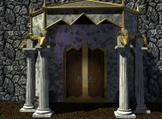
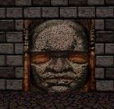
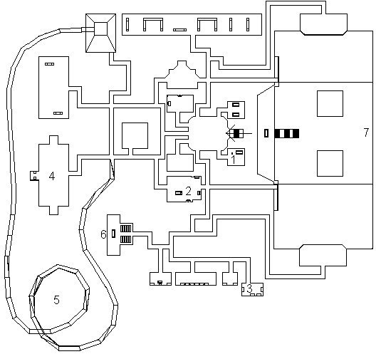

Kriegspire: Superior Temple of Baa



| 1 | Pedestal:Expert Perception is the key, and the doors of Baa will let you be. The spiral then each head, talk to Baa, or you'll be dead. This means that you need a high perception to open the doors, an expert at least (8 Perception). |
| 2 | Letter from Zenofex needed to finish the Find Cure quest. you need the High Sorcerers Key and High Clerics Key to open it. |
| 3 | You will find the High Sorcerers Key here. |
| 4 | You will find the High Clerics Key here. |
| 5 | This is the loop the poem talks about, sparks rain from the ceiling. |
| 6 | Here you will find 4 heads of baa 1-4 |
| 7 | The Almighty Head of Baa |
This is not too complex of a dungeon which is nice. There are plenty of Wizards and Clerics to fight.
To get into this place you need to be wearing the Cloak of Baa you got from Wilbur Humphrey's from the Find Cure for Slicker Silvertoung.
Then you need do is pick up the key's, then the chest will open for you. In the room the chest is in there is a pedestal with a note on it that in a roundabout way tells you you need to have high percerption to open the doors, or get shocked. I put on the cloak that Humphrey's gave me on my guy with the highest perception. 8 skill and an expert status.
An interesting side "quest", you can become a member of the Temple of Baa by going around the tunnel by 5, and then going to the chapel at 6, and touching the heads in order. You can then go and click on the Supreme Head of Baa to become a member. I got 50,000 experience, a Bad reputation, and whatever benifts are derived from this. But the effects seem to vary, some say they lost 2,000,000 experience, some said their reputation was unaffected.
Leave us a message at: mgrounds@hotmail.com